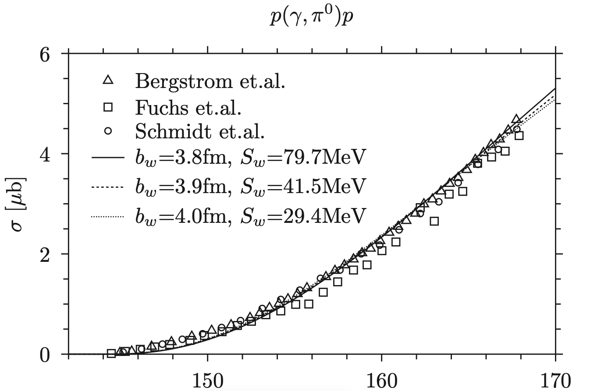

I have implemented a few special functions in the Julia language. Few special functions in Julia. Includes Clausen function, Coulomb wave functions, Debye function, Fresnel functions, Struve function, Hypergeometric functions, Confluent hypergeometric functions, Fermi-Dirac functions.

This thesis investigates pion photoproduction off nucleons near the threshold using a nuclear model with explicit mesons. In this model, the nucleons do not interact through a potential but emit and absorb mesons which are treated explicitly, and we limit the model to the one meson approximation. We focus on the case where the mesons are pions and calculate the total cross-section of pion photoproduction near the threshold. Specifically, we find the set of parameters for which the model quantitatively can describe the total cross section near the threshold..

I had a poster presentation at dansk fysisk selskab. Here is the poster.

We apply the nuclear model with explicit mesons to photoproduction of neutral pions off protons at the threshold. In this model the nucleons do not interact with each other via a potential but rather emit and absorb mesons that are treated explicitly on equal footing with the nucleons. We calculate the total cross section of the reaction for energies close to threshold and compare the calculations with available experimental data. We show that the model is able to reproduce the experimental data and determine the range of the parameters where the model is compatible with the experiment.